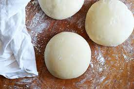

Pizza Dough!

Description
This pizza dough recipe is incredibly simple! It takes about 15 minutes of active work and a little bit of patience. I will make this dough a day ahead and split it into two separate bowls to proof in the refridgerator.
I will then stretch it over an entire sheet pan and make two giant rectangle pizzas. This leaves a whole pizza for the next day as well! You can top this dough with absolutely anything and it is guaranteed to be delicious!
Our go to at home is always the forbidden pineapple mixed with some olive(strange combo, I know!). I hope you enjoy this easy dough recipe!
Ingredients
- 2teaspoons/5 grams dry active yeast
- 4½cups/625 grams all-purpose flour, plus extra for dusting
- 2teaspoons/5 grams kosher salt
- 2tablespoons/30 milliliters olive oil
Steps
- Put 1¾ cups/420 milliliters lukewarm water in a mixing bowl (use a stand mixer or food processor if you prefer). Sprinkle yeast over water and let dissolve, about 2 minutes.
- Add flour, salt and olive oil and mix well until flour is incorporated and dough forms, about 5 minutes. It may look a little rough or pockmarked.
- Lightly dust a work surface with flour. Turn dough out onto surface and knead lightly until it looks smooth, 3 to 4 minutes. Cut dough into 4 equal pieces, about 8 ounces/225 grams each.
- Wrap dough pieces individually in resealable zipper bags and refrigerate for several hours or, for best results, overnight; you can also freeze it for future use. (You can skip this rise in the refrigerator and use the dough right away, but this cool, slow rise makes it easier to stretch and gives the pizza a crisper texture and more nuanced flavor.)
- To use dough, form each piece into a smooth, firm ball, and place on a flour-dusted or parchment-lined baking sheet. (If you froze the dough, leave it at room temperature for several hours first, or defrost overnight in the refrigerator.) Flour lightly, cover loosely with plastic wrap and top with a kitchen towel. Leave to rise in a warm spot until doubled in size, about 30 minutes. Each dough ball will make a 10-inch diameter pizza.